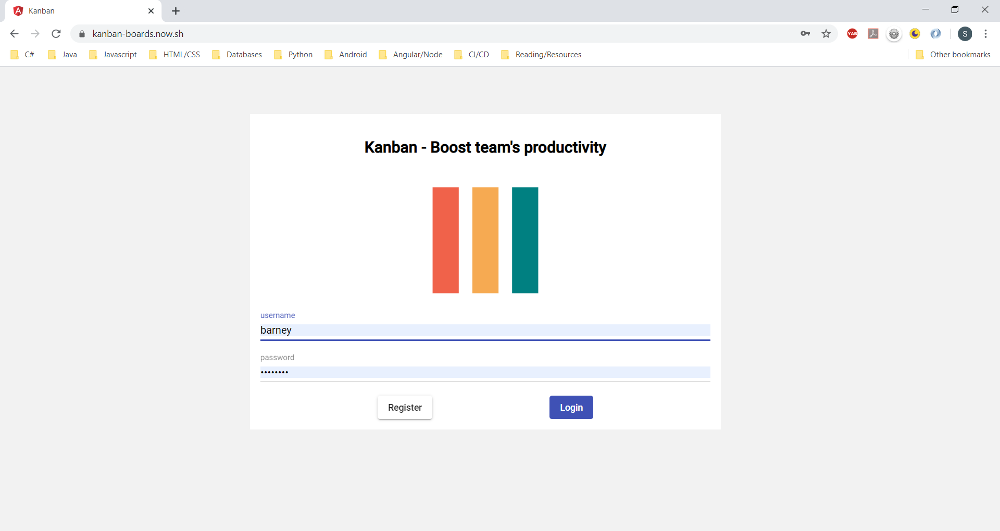
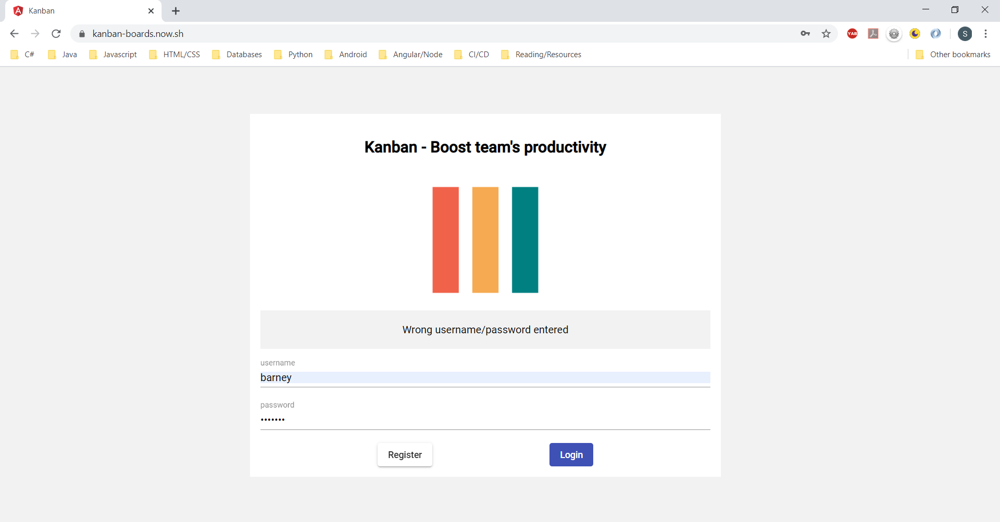
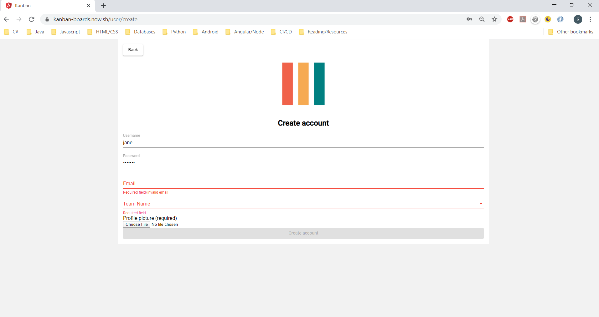
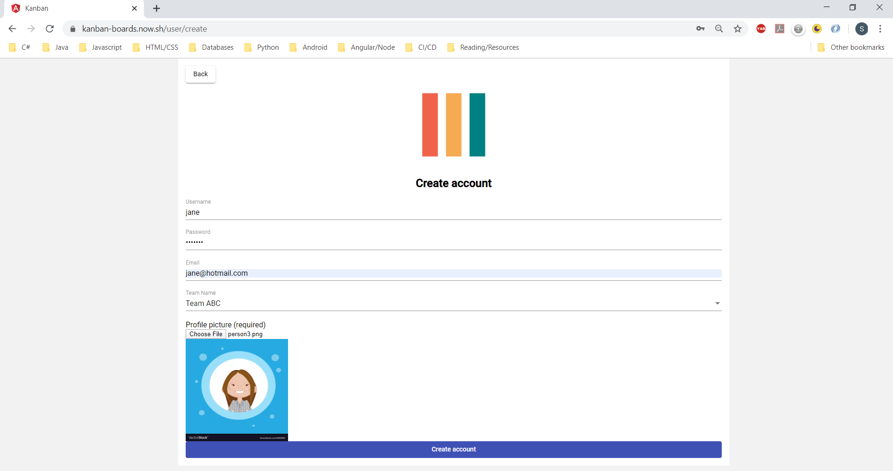
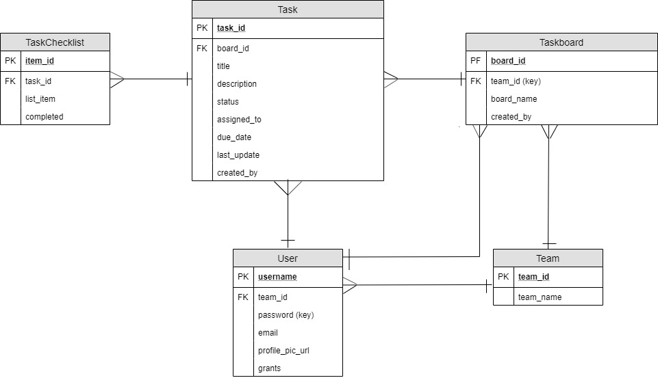

Kanban App
Overview
A Kanban-style task-listing web application built using Angular 8, Node.js/Express and MySQL/MongoDB/AWS S3. WebSocket is used to allow team members who are on the application at the same time to see live updates.
Key features:
- Create taskboard and rename it
- Delete taskboard
- Create tasks under taskboard
- Update task progress status
- Update task details such as title, description, checklist items, due date and assigned to
- Delete task
Application is deployed on: https://kanban-boards.now.sh
Source codes at: https://github.com/SeetohYQ/kanban-app (client) and https://github.com/SeetohYQ/kanban-app-server (server)
Home Page
Before user can access the key features in main app, he/she has to first register for a new account or log in existing account.
Login
User enters login credentials and if authenticated, will be re-directed to main app. Otherwise, an error message will show.
 Register new account
User has to provide all required fields before he/she can submit the form.
 Security Considerations
- Mode: JSON Web Token (JWT)
- After user logs in and is authenticated, server issues token to client, which is stored on browser's local storage. Application will time out and exit based on the token expiration duration (set at 15 mins)
- User will not be able to access the protected routes directly by keying in url, if he/she is not authenticated or has been authenticated but token has expired. The protected routes are: /taskboards, /taskboards/create?status=[status] and /user/update
- Checks that token is still valid as user navigates between protected routes
- Takes care of malicious attacks like manually saving 'user_data' i.e. the token details' key into browser's local storage and accessing protected routes directly and causing app crash
Database Design
MongoDB: JWT tokens
AWS S3: Users' profile pictures
MySQL: Taskboard-related (ERD below)
